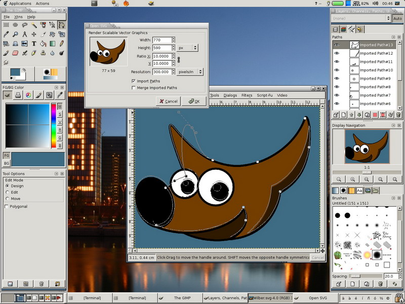

5.1. Programas para diseño gráfico.
Los programas de diseño gráfico suelen ofrecer la posibilidad de trabajar con capas. Además, presentan características generales comunes a todos ellos.
| Programas para dibujo libre | |
|
Funcionan de
modo similar a los programas de diseño de objetos. Se basan, sobre todo, en la
posibilidad de dibujar y modificar curvas libres a través de sus tangentes
(herramienta que se llama bézier).
La base del dibujo es la creación de formas de modo parecido al dibujo a mano alzada.
Macromedia FreeHand, Adobe Illustrator o Corel
Draw! son ejemplos de dibujo libre en la plataforma Windows. En la plataforma Linux tenemos programas como
OpenOffice Draw.
|
Pantalla de OpenOffice Draw |
| Programas para el diseño de páginas web |
|
| Pantalla de Macromedia Dreamweaver |
Son programas que generan archivos con extensión .htm ó .html (acrónimo de hipertext mark-up language), que están escritos en el lenguaje de programación empleado en las páginas web. Los más empleados son Macromedia Dreamweaver y Microsoft Frontpage en el sistema Windows. En el sistema Linux podemos emplear para este fin Mozilla Composer. |
| Programas para retoque fotográfico | |
|
Los programas de retoque fotográfico
permiten modificar a nuestro gusto, con las herramientas de que disponen,
imágenes obtenidas a través de una cámara digital o de un escáner.
Algunos ejemplos comerciales de este tipo de programas son Adobe PhotoShop o Corel Photopaint en la plataforma Windows. En la plataforma Linux tenemos el GIMP. |
 |
| Programas para maquetación | |
| |
La maquetación es el procedimiento que se sigue para crear una publicación (folleto, revista, fascículo, periódico, etc.). Permiten controlar márgenes, sangrías, visualizar las páginas del documento de forma completa e incluir imágenes, aunque no se puede modificarlas. Están preparados para relacionarse con los programas de impresión que se encuentran en las imprentas. Los programas más utilizados son QuarkXPress y Adobe PageMaker, que funcionan bajo el sistema operativo Windows. Bajo el sistema operativo Linux funciona la aplicación Scribus. |
| Programas para presentaciones |
|
| Una presentación es una combinación de imágenes con texto que se combinan, formando lo que se llaman diapositivas, y que se proyectan para un determinado público. El programa más conocido para la realización de presentaciones es Microsoft PowerPoint, que funciona bajo Windows. En Linux tenemos OpenOffice Impress. | |
Pantalla de PowerPoint |
Pantalla de OpenOffice Impress |
Obra publicada con Licencia Creative Commons Reconocimiento 2.5